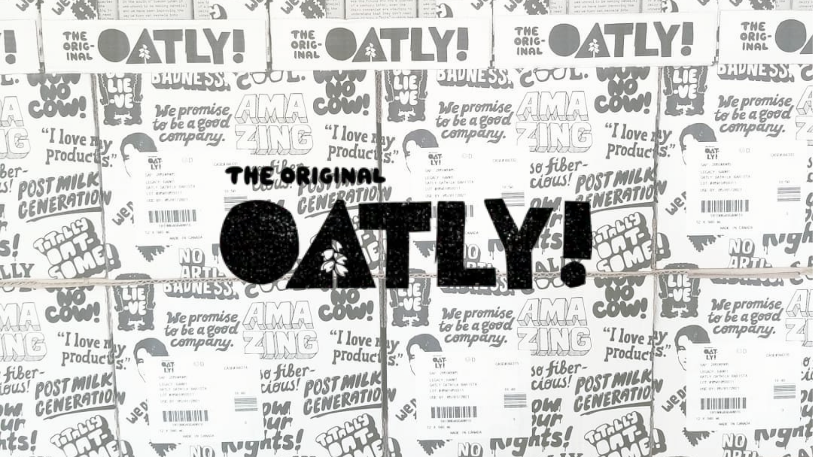

[INDEX]
PROYECTOS SELECCIONADOS
CARMEN LILLO
INFO
[01] BRANDING / IDENTIDAD

ODDLIQUOR
INFO
[02] DISEÑO ESCÉNICO / ART DIRECTION

LADY VIPER
INFO
[03] BRAND & NARRATIVE DESIGN
METAL MAD FEST
INFO
[04] CREACIÓN DE CONTENIDO / PROMO

OATLY
INFO
[05] STRATEGY & COPYWRITING

V. SIN GUION.
INFO
[06] VLOGGING / NARRATIVE

MAPA REMIX
INFO
[07] ESPACIOS CREATIVOS / REFORMA

MAPA RIVERLAND
INFO
[08] CREACION DE CONTENIDO / ARQUITECTURA EFÍMERA